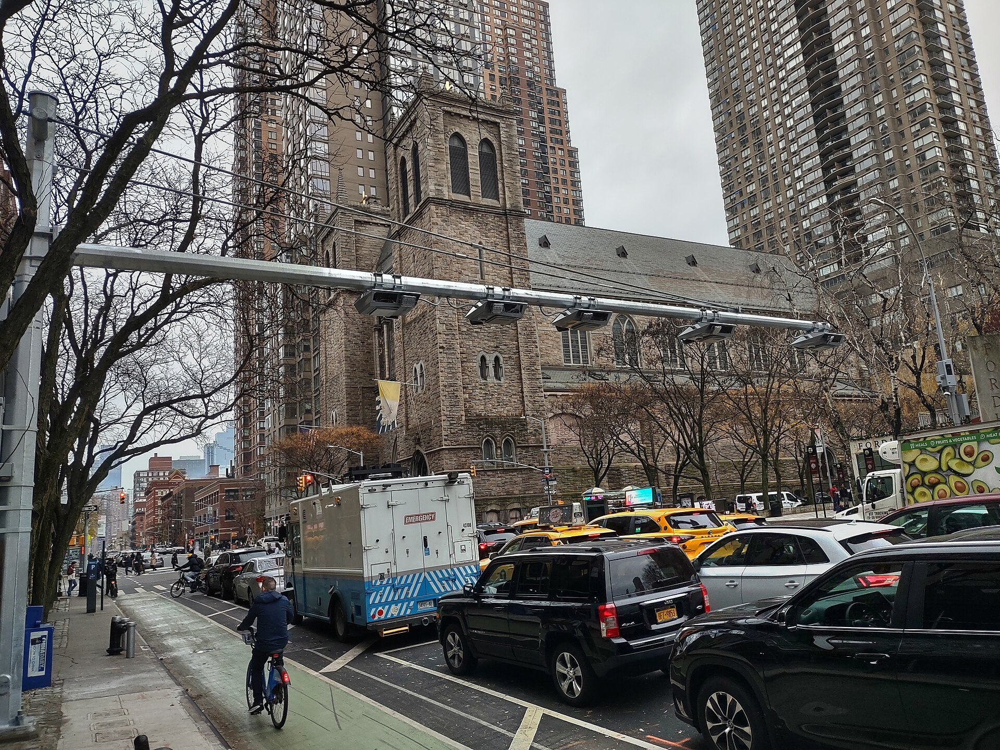

An interrupted time series at eleven NYCCAS PM2.5 monitors, cross-referenced with traffic-diversion residuals at every bridge and tunnel into Manhattan. The toll began on January 5, 2025.

Each monitor is colored by its step-change since the toll began, relative to a counterfactual anchored on the Queens College and Van Wyck reference monitors. Green means the corridor improved; brick means it worsened. Turn on the disadvantaged-community layer to see which corridors carry the state's environmental-justice designation.
Monthly mean PM2.5 at each monitor against what the pre-toll trend and the reference monitors predict it would have been without the toll. The purple line is January 5, 2025.
Coefficients from OLS with HAC standard errors (Newey-West, maxlags=30). βpost is the step-change at toll launch in µg/m³; significance at α=0.05 highlighted. γQC and γVW are the two control-site coefficients reported side-by-side.
NYC Admin Code §24-163 limits vehicle idling to 1 minute within a school zone (vs. 3 minutes citywide), enforceable by any citizen who films a violation through DEP's Idling Complaint System (Local Law 58, 2018). This law applies uniquely to schools — a policy lever the corridor-level analysis cannot surface.
Hunts Point is omitted from this analysis: its monitor was offline Sept 2023 to March 2025, so no pre/post comparison at the toll date is possible.
| Corridor | EJ-designated | βpost (µg/m³) | Schools within 400 m |
|---|---|---|---|
Loading… | |||
311 idling complaints. Residents near these schools can file complaints through NYC's 311 system under Noise - Vehicle / Engine Idling or Air Quality / Vehicle Idling (n=25 total in the 400 m box, 2021–2026). Complaint volume reflects reporting behavior as much as actual idling. DEP Citizens Air Complaint Program filings are not in 311, so this undercounts idling complaints. The chart shows the community-reported record as an independent signal, not a pollution measure.
Monthly idling complaints near Mott Haven schools (400 m buffer)
311 "Engine Idling" (Noise - Vehicle) + "Air Quality / Vehicle Idling" reports. Source: NYC Open Data 311. Vertical line: toll launch Jan 5, 2025.
EJ status is confounded with zone status in this data: every in-zone monitor except Queensboro sits in a designated tract, and so does every outside-zone monitor with a full pre-toll record. Panel estimates (site + date fixed effects, 11 sites) of an EJ gap run from −0.38 to +0.02 µg/m³ depending on flag definition, none significant (p = 0.65–0.96). What the data shows is geography: inside the zone improved; the two South Bronx corridors did not.
Five independent tests of the traffic-diversion hypothesis. The main ITS estimates are underpowered (Mott Haven p = 0.61; five ITS sites, eleven in the panel) and PM2.5 is driven largely by regional sources. The checks below probe whether the null results are informative or whether a signal emerges under sharper designs. Hunts Point is excluded from all checks (monitor offline Sept 2023–March 2025, no valid step-change at the toll date).
Hunts Point is omitted: its monitor was offline Sept 2023 to March 2025, so no pre/post comparison at the toll date is possible.Daily wind speed, temperature, precipitation, relative humidity, and dominant wind-direction sector (8 compass bins) added to the full ITS model. Compares 95% CI width to the original specification.
Original vs. weather-adjusted β_post with 95% CI
The toll is 75% cheaper overnight. If diversion is toll-driven, peak-hour PM2.5 should rise relative to overnight. Daily outcome: mean peak PM2.5 minus mean overnight PM2.5 (≥8 peak hours, ≥5 overnight hours required). QC and VW differences used as controls.
ITS β_post on peak-minus-overnight PM2.5 (all days and weekdays only)
Using pre-toll data only, a fake intervention is placed on the 1st of each month from July 2021 through June 2024 (up to 36 placebos). The long-baseline QC-only spec is used for all sites. Each placebo requires ≥90 observed days on each side and ≥60% data coverage in the surrounding 6-month windows. Empirical p = share of |β_placebo| ≥ |β_observed|.
Distribution of placebo β_post by site (red line = observed long-baseline β)
All monitoring sites with ≥30 pre-toll days in the VW window are stacked into a balanced panel. Site and date fixed effects absorb site-specific baselines and shared daily shocks (date FE replaces the QC covariate). Two specifications: (A) post × site — per-site toll effects; (B) post × EJ + post × in-CRZ — differential effect by environmental-justice status. Wild cluster bootstrap with Webb weights (B=9,999, G clusters). Hunts Point excluded (zero pre-toll observations in the VW window).
Spec A: per-site toll effect (site + date FE, cluster-robust CI)
In the pre-toll period (2022–2024), Mott Haven daily PM2.5 is regressed on Throgs Neck Bridge daily crossings (per 1,000 vehicles), Queens College, seasonal terms, day-of-week dummies, and weather covariates (HAC SE, maxlags=30). The estimated slope is multiplied by the post-toll Throgs Neck residual (+2,041 veh/day) to produce an implied PM2.5 change, then compared to the observed ITS step-change.
Mott Haven PM2.5 vs Throgs Neck volume (pre-toll, regression line shown)
Hourly NO2 from two EPA AQS SLAMS monitors in the Bronx — IS 52 (681 Kelly St, South Bronx; Site 110) and Pfizer Lab Site (Southern Blvd & 200th St, North Bronx; Site 133) — aggregated to daily means and compared before and after the toll. Background control: daily mean of Queens EPA sites 124 and 125. Longer baseline ITS uses 2022-01-01 start with HAC SE (maxlags=30). Note: neither monitor is on the Bruckner Expressway or the Major Deegan corridor.
For each site, the 2025 mean minus the 2024 mean on days matched by (month, day). The −VW and −QC columns subtract the same control's change on matching days. The 2026 columns use Jan 1–Sep 4, 2026 vs matched 2024 days. Units: µg/m³.
The main ITS includes a post-toll drift term (post×t) that allows a gradual ramp after the toll in addition to the immediate step. Removing it forces all toll-related change into a single permanent level shift. Same window (2024-02-22 to present), same covariates (QC, VW, seasonal terms, trend, covid). HAC SE, maxlags=30.
| Site | Full β | Full p | Step β | Step 95% CI | Step p | Note |
|---|---|---|---|---|---|---|
| Cross Bronx Expy | −0.5226 | 0.210 | −0.019 | (−0.567, +0.529) | 0.947 | |
| Mott Haven | +0.2957 | 0.608 | −0.645 | (−1.147, −0.143) | 0.012 | Sign reverses |
| Manhattan Bridge | −1.3276 | 0.028 | −0.858 | (−1.417, −0.299) | 0.003 | |
| Williamsburg Bridge | −1.0352 | 0.026 | −0.473 | (−0.974, +0.029) | 0.065 | Model-dependent |
| Queensboro Bridge | −1.0981 | 0.205 | −0.767 | (−1.443, −0.090) | 0.026 | |
| Broadway 35th St | −2.6818 | 0.000 | −1.595 | (−2.734, −0.455) | 0.006 |
OLS baseline model (time trend + month + day-of-week fixed effects) trained on 2019–2024 daily volumes. Residual = actual − forecast. Positive residual means more traffic than expected — consistent with diversion to avoid the toll.
Daily total entries into the Congestion Relief Zone by detection group, Jan 5, 2025 → present.